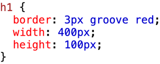
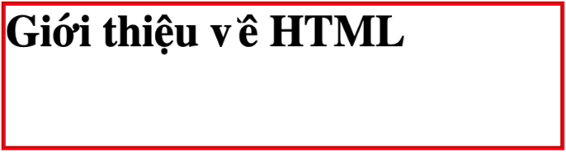
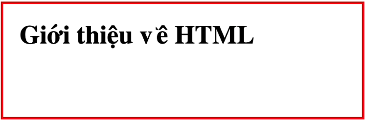

Lý thuyết bài học
Bài học sau đây sẽ giúp học sinh tìm hiểu cách định dạng khung bằng CSS để sắp xếp và trình bày các phần nội dung trên trang web.
Bài tập ôn luyện
Phần trắc nghiệm:
Câu 1: Em có thể thay đổi loại phần tử HTML bằng thuộc tính gì?
A. show.
B. display.
C. type.
D. section.
Câu 2: Để định dạng khoảng cách từ vùng text đến đường viền ngoài của khung, em sử dụng thuộc tính nào?
A. margin.
B. spacing.
C. padding.
D. border-width.
Câu 3: Cách thiết lập các mẫu định dạng với các phần tử có id tương ứng là
A. .idname {thuộc tính: giá trị;}.
B. id[name] {thuộc tính: giá trị;}.
C. #idname {thuộc tính: giá trị;}.
D. idname {thuộc tính: giá trị;}.
Câu 4: Cho mẫu CSS và kết quả nhận được như sau:
 
Em cần thêm thuộc tính nào vào đoạn mã CSS để nhận được kết quả dưới đây?

A. margin: 20px;
B. border-space: 20px;
C. white-space: 20px;
D. padding: 20px;
Câu 5: Để áp dụng định dạng cho tất cả các phần tử có tên lớp đồng thời là product và beauty, em cần thiết lập bộ chọn lớp CSS như thế nào?
A. .product.beauty.
B. #product#beauty.
C. product.beauty.
D. .product-beauty.
Câu 6: Các thẻ (hay phần tử HTML) được chia thành những loại nào?
A. Khối và ngoại tuyến.
B. Nội tuyến và ngoại tuyến.
C. Khối và nội tuyến.
D. Trong và ngoài.
Câu 7: Phần tử HTML nào sau đây thuộc loại nội tuyến?
A. script.
B. table.
C. li.
D. article.
Câu 8: Thuộc tính nào sau đây chỉ áp dụng cho phần tử dạng khối?
A. margin.
B. padding.
C. border-style.
D. width.
Câu 9: Phát biểu nào sau đây sai?
A. Một phần tử có thể thuộc nhiều lớp khác nhau.
B. Có thể thiết lập bộ chọn là thuộc tính trong CSS.
C. Tên của id và class phân biệt chữ in hoa, in thường.
D. Các thuộc tính liên quan đến khung của một phần tử HTML đều có tính kế thừa.
Câu 10: Thuộc tính border-style không nhận giá trị nào sau đây?
A. Groove.
B. Shadow.
C. Ridge.
D. Dashed.
Câu 11: Cho mẫu CSS sau: h1 {padding: 5px 10px 3px 20px;}. Phát biểu nào sau đây đúng?
A. padding-left = 3px.
B. padding-top = 20px.
C. padding-right = 10px.
D. padding-bottom = 5px.
Phần tự luận:
Câu 1: Phân biệt giữa phần tử khối và phần tử nội tuyến trong HTML.Câu 1: Điểm khác biệt giữa radio, checkbox và select là gì
Câu 2: Làm thế nào để thay đổi loại phần tử HTML từ khối sang nội tuyến?
Câu 3: Mã định danh (id) và lớp (class) khác nhau như thế nào trong CSS?
Trả lời:
Trắc nghiệm:
1B 2C 3C 4D 5A 6C 7A 8D 9D 10B 11C
Tự luận:
Câu 1:
Đáp án:
Phần tử khối (block) bắt đầu từ đầu hàng và kéo dài suốt chiều rộng của trang web, còn phần tử nội tuyến (inline) nằm bên trong một phần tử khác mà không ngắt dòng.
Giải thích:
Phần tử khối chiếm toàn bộ chiều ngang trang và thường được sử dụng cho các thành phần lớn như đoạn văn hay div. Phần tử nội tuyến không ngắt dòng và chỉ chiếm không gian cần thiết, phù hợp cho các phần tử như span hay a.
Câu 2:
Đáp án:
Sử dụng thuộc tính CSS display với giá trị inline.
Giải thích:
Thuộc tính display trong CSS điều khiển cách một phần tử được hiển thị. Để chuyển đổi phần tử từ khối sang nội tuyến, đặt display: inline;.
Câu 3:
Đáp án:
Mã định danh (id) là duy nhất cho mỗi phần tử, trong khi lớp (class) có thể được áp dụng cho nhiều phần tử.
Giải thích:
Mã định danh (id) là duy nhất cho mỗi phần tử, trong khi lớp (class) có thể được áp dụng cho nhiều phần tử.